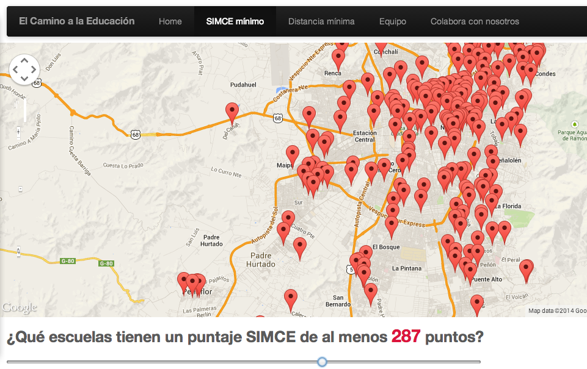
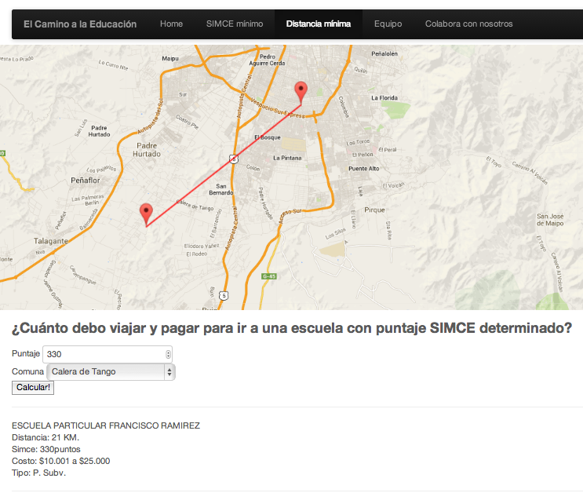

$ git clone https://github.com/alangrafu/mapa-educacion
Initially, mapa-educacion was developed during the Inria Chile / Open News scrapaton. Thus, it was left as a hack, without nice documentation like this document.
There are two main visualizations, the first one is most likely to be reused, the second one seems too custom.
The initial goal of this visualization was to identify certain schools that showed results higher than a specific value in a standarized test. The user can move a slide in order to change the threshold, as can be seen in the following figure:

It is recommended that you modify viz1.html in order to start using this visualization. The parameters that can be passed to the function init() are:
url: URL of the CSV file that will be used to obtain the datamapDiv: Id of the div element where the map will be createdmapCenter: Latitude and longitude of the center of the mapmapZoom: Initial zoom level for the maptitleField: Column in the CSV file containing the title or name of the point that will be displayedlatField: Column in the CSV file containing the latitude of the pointlonField: Column in the CSV file containing the longitude of the poinscoreField: Column in the CSV file containing the score of the poinYou can call the visualization by running
config = {
"url": "datos.csv",
"mapCenter": [-33.5, -70.7],
"mapZoom": 11,
"latField": "lat",
"lonField": "lon",
"titleField": "escuela",
"scoreField": "simce",
"mapDiv": 'map1'
};
init(config);
The second visualization tries to identify the closest school for a person that lives in a specific municipality. This school must have at least a minimum score in the standarized test. The visualization will find the closest school that complies with both requirements.

As usual, I recommend to start modifying the HTML in order to adapt it to your needs, but basically you need to load
<script src="js/main2.js"></script>
The parameters allowed for this visualization are:
numericData: The URL of the CSV file containing the data about the entities and their scoresgeoData: The URL of the CSV file containing the data about municipalitiesmapCenter: The center of the mapmapZoom: The initial zoom of the mapscoreField: The column in the CSV file contianing the score valuestitleField: Column in the CSV file containing the title or name of the point that will be displayedlatField: Column in the CSV file containing the latitude of the pointlonField: Column in the CSV file containing the longitude of the poinmapId: The Id of the div element where the map will be createdrunButton: The button that will be used to start finding the closest schoolresultDiv: The div element where the results will be displayed